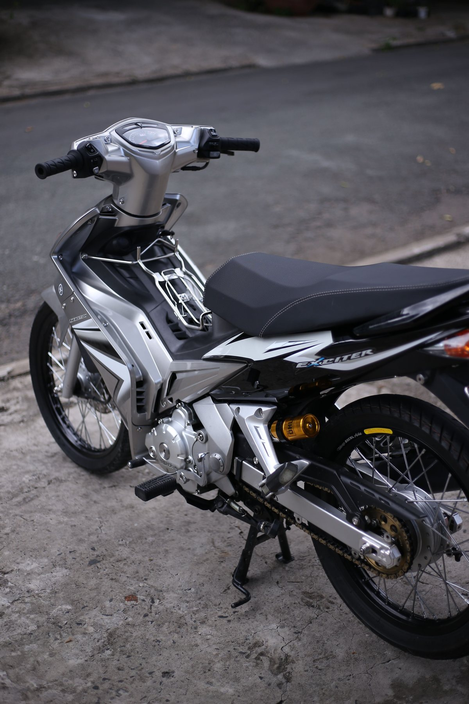

01
선별
서류상 실제 50cc인 반자동 오토바이를 구매합니다(블루카드).
02
정비
스프로킷, 체인, 브레이크, 오일, 전체 점검과 냐짱 시운전.
03
출발
냐짱에서 인수하고 면허 없이 타세요 — 더 손볼 것이 없습니다.
서류상 실제 50cc인 반자동 오토바이입니다. 판매 전 정비와 전체 점검을 마칩니다: 새 스프로킷과 체인, 브레이크, 오일. 일반 50cc보다 경쾌하게 달리면서도 엔진은 순정 그대로라 튼튼하고 오래 탈 수 있습니다.

깨끗한 서류의 정비된 50cc 반자동 오토바이. 가격과 재고는 WhatsApp 또는 Telegram으로 문의하세요.
이미 판매된 바이크입니다. 저희가 준비하는 바이크의 상태를 보여줍니다.
엔진은 건드리지 않습니다: 배기량은 순정 50cc, 엔진 구조도 공장 그대로입니다. 서류 내용과 오토바이가 일치합니다.
뒷바퀴에 더 작은 스프로킷과 새 체인을 달고 장력을 제대로 맞춥니다. 일반 50cc보다 경쾌하게 달리고 새 부품이라 오래갑니다.
브레이크를 전부 점검·조정해 확실하게 멈춥니다.
오일을 교체하고 전체를 점검한 뒤 판매 전 냐짱에서 직접 시운전합니다.
일반 50cc — 스쿠터든 순정 반자동이든 — 는 약 50 km/h 정도이고 2인으로는 언덕에서 내려야 할 때가 많습니다. 저희가 정비한 오토바이는 더 경쾌합니다: 1인 최고 70 km/h, 2인 최고 60 km/h, 2인으로도 언덕을 오릅니다. 엔진은 순정, 부품은 새것이며 반자동은 잘 고장 나지 않고 수리비도 저렴합니다.
서류상 실제 50cc인 반자동 오토바이를 구매합니다(블루카드).
스프로킷, 체인, 브레이크, 오일, 전체 점검과 냐짱 시운전.
냐짱에서 인수하고 면허 없이 타세요 — 더 손볼 것이 없습니다.
50cc를 넘는 오토바이는 이륜 면허(A종)가 필요합니다. 면허가 없으면 시행령 168/2024/NĐ-CP에 따라 벌금이 부과되고 오토바이가 보관소로 옮겨질 수 있습니다. 저희 오토바이는 블루카드에 50cc가 기재되어 있어 면허가 필요 없습니다.